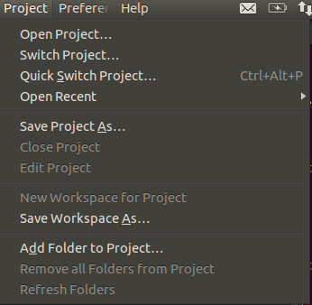
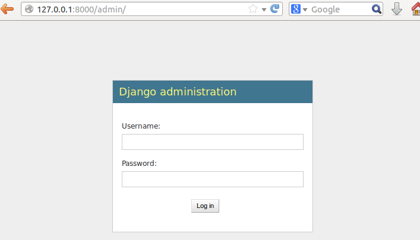

O objetivo deste artigo:
- Instalar/Verificar python instalado no Sistema Operacional.
- Instalar gerenciador de pacotes python: pip.
- Instalar o virtualenv.
- Criar/Ativar o virtualenv do projeto.
- Instalar o Django dentro do virtualenv.
- Criar um projeto Django.
- Criar uma app Django dentro do projeto.
- Instalar Sublime Text.
- Criar uma classe Model.
- Criar uma rota: home.
- Criar a view: home.
- Configurar o Admin.
- Rodar o Projeto.
Ambiente usado durante a escrita deste artigo
- Sistema Operacional: Linux Ubuntu 12.04 LTS
- Python 2.7.3
- Django 1.6
No Linux/Ubuntu não precisamos instalar Python, porque já é nativo em sistemas operacionais baseados em Unix, mas para termos certeza basta executar o comando no terminal:
$ python –version
o resultado será:
Python 2.7.3
Vamos começar instalando os pacotes necessários no Sistema Operacional:
$ sudo apt-get update
$ sudo apt-get install python-dev python-setuptools
$ sudo easy_install pip
$ sudo pip install virtualenv
Para testarmos se o virtualenv está instalado corretamente executaremos no terminal:
$ virtualenv --version
Resultado:
1.11.5
O pacote python-setuptools foi utilizado apenas para instalarmos o easy_install que usamos para instalar o pip.
A partir de agora, no ambiente virtual sempre usaremos o pip para instalar os pacotes.
Muito bem, com o virtualenv instalado, o próximo passo será criar nosso virtualenv e instalarmos o Django.
Vamos criar nosso virtualenv chamado pythonclub:
$ virtualenv pythonclub --no-site-packages
--no-site-packages = esse parametro do virtualenv indica que o ambiente virtual será totalmente isolado do sistema operacional, que só enxergará os pacotes instalados dentro do virtualenv.
Agora vamos entrar dentro do ambiente virtual que criamos e vamos ativá-lo:
$ cd pythonclub/
$ source bin/activate
Neste momento temos o ambiente virtual criado e ativado, pronto para instalar o django:
$ pip install django
Quando executamos o comando pip install django sem especificarmos a versão desejada, o pip instala a ultima versão disponivel. Se quizermos instalar uma versão específica devemos executar assim:
$ pip install django==1.5.4
Então podemos finalmente criar o projeto django executando o seguinte comando:
$ django-admin.py startproject first_django_project
Com o projeto criado, devemos criar uma app chamada: core:
$ cd first_django_project
$ python manage.py startapp core
Alterar o arquivo settings.py para adicionar a app core em INSTALLED_APPS
INSTALLED_APPS = (
'django.contrib.admin',
'django.contrib.auth',
'django.contrib.contenttypes',
'django.contrib.sessions',
'django.contrib.messages',
'django.contrib.staticfiles',
'core',
)
OBS: perceba que ao usar o Django 1.6 a app admin já estará instalada.
Até aqui a estrutura de diretórios está assim:
../first_django_project/
├── core
│ ├── admin.py
│ ├── __init__.py
│ ├── models.py
│ ├── tests.py
│ └── views.py
├── first_django_project
│ ├── __init__.py
│ ├── __init__.pyc
│ ├── settings.py
│ ├── settings.pyc
│ ├── urls.py
│ └── wsgi.py
└── manage.py
OBS: Os diretórios bin/, include/ e lib/ são diretórios do virtualenv. O restante são diretórios do projeto.
Para rodar o projeto, digite o comando:
$ python manage.py runserver
Validating models...
0 errors found
May 11, 2014 - 03:30:48
Django version 1.6.4, using settings 'first_django_project.settings'
Starting development server at http://127.0.0.1:8000/
Quit the server with CONTROL-C.
[11/May/2014 03:30:59] "GET / HTTP/1.1" 200 1757

Chegou o momento de instalarmos o editor. No caso deste tutorial usaremos o Sublime Text 3
$ sudo add-apt-repository ppa:webupd8team/sublime-text-3
$ sudo apt-get update
$ sudo apt-get install sublime-text-installer
Com o Sublime já instalado, quero dizer que existe inúmeros plugins disponíveis, mas este assunto sai um pouco do escopo deste tutorial, mesmo assim quero indicar dentre estes inúmeros plugins, dois que não vivo sem: Djaneiro e SublimeCodeIntel
indico 2 sites para saber um pouco sobre os plugins: Sublime wbond Sublime Text Dicas
Para abrirmos o diretório do projeto no Sublime, iremos ao menu Project:
Project >> Add Forlder to Project...
O fluxo de um request em projetos django é o seguinte: URL --> VIEW --> TEMPLATE
Então vamos começar criando uma url home para o projeto, no arquivo urls.py:
url(r'^$', 'core.views.home', name='home'),
Com a url criada e apontando para view core.views.home vamos criar a tal view home, no arquivo core/views.py
from django.shortcuts import render
def home(request):
context = {'texto': 'Seu primeiro projeto Django no Linux/Ubuntu com Sublime Text 3'}
return render(request, 'index.html', context)
Agora resta criarmos o template index.html. Não me aprofundando muito, quero dizer que existe uma convenção no django que procura o template em um diretório: app_name/templates. No caso ficará assim: first_django_project/core/templates.
OK, vamos criar este diretório e o template index.html, estando no diretório root do projeto: first_django_project:
$ mkdir core/templates
$ touch core/templates/index.html
maravilha, o html do index.html é bem básico:
<!DOCTYPE html>
<html lang="en">
<head>
<title>Pythonclub<title>
</head>
<body>
<h1>{{ texto }}</h1>
<img src="{{ STATIC_URL }}images/logo_275x130.png"/>
</body>
Na view home escrevemos no contexto uma variável chamada: texto, e agora no template estou exibindo esta variável usando: {{ texto }}
Executando o projeto novamente o resultado será:
$ python manage.py runserver
Validating models...
0 errors found
May 11, 2014 - 03:30:48
Django version 1.6.4, using settings 'first_django_project.settings'
Starting development server at http://127.0.0.1:8000/
Quit the server with CONTROL-C.
[11/May/2014 03:30:59] "GET / HTTP/1.1" 200 1757
Para finalizarmos vamos criar uma classe model simples, apenas para ilustrar o uso do Admin
no arquivo core/models.py
from django.db import models
class Pessoa(models.Model):
nome = models.CharField(max_length=100)
cpf = models.CharField(max_length=20)
def __unicode__(self):
return self.nome
Vamos rodar o comando syncdb para o dango criar as tabelas. Este comando vai perguntar se você deseja criar um super usuário, digite yes, crie o usuário admin e dê uma senha e um email.
$ python manage.py syncdb
Agora vamos registar esta classe no admin, editando o arquivo core/admin.py(se o arquivo não existir crie):
from django.contrib import admin
from core.models import Pessoa
admin.site.register(Pessoa)
Rodando o projeto e acessando a url: http://127.0.0.1:8000/admin/ digite o super usuário e senha criado ao rodar o comando syncdb
Neste momento podemos selecionar Pessoa e cadastrar pessoas ao nosso sistema.
Bom pessoal, é isso, um tutorial simples apenas de meio longo.
espero que gostem, um abraço a todos!
comments powered by Disqus